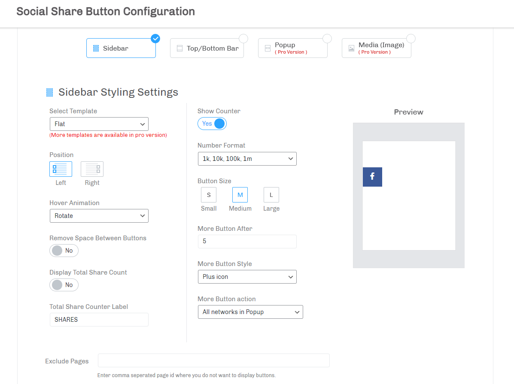
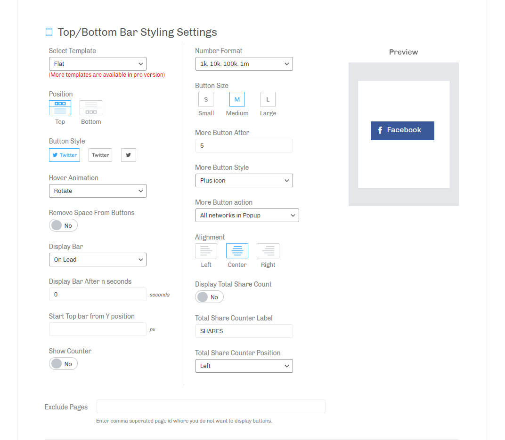

Now you are able to set up display positions sitewide to display at front-end. You can display your sharing buttons in Sidebar, Top / Bottom Bar and Popup. For each position you will find styling options visible.
Sidebar
Select Sidebar to display your sharing buttons at floating sidebar. On select sidebar you will get Sidebar Styling Settings visible with Preview at right side.

Sidebar Styling Settings
Select Template
Select beautiful template for your sharing buttons from dropdown, with each template see preview at right side.
You have following templates here,
Position
Please select position either left or right to display your floating sidebar at front-end. For each position see preview at right side.
Hover animation
Animate your sharing button with various available animation effects when it is pointed at sidebar.
Select any effect from dropdown and point button at preview section, button will animate with your selected effect. Here is the list of animation effects available for social sharing buttons.
- Rotate
- Fade
- Pulse
- Pop
- Buzz Out
Display Total Share Count
Now you are also able to display total number of shares of your page / post with any social networks at top of sidebar buttons. Please switch to Yes here to enable this feature.
Total Share Counter Label
Enter text here to be displayed as label to indicate the total number of page / post share.
Remove Space Between Buttons
Please switch to Yes if you need to remove space between all sharing buttons and see preview at right side how your buttons will look.
Show Counter
Please switch to Yes here if you required to show counter for total shares on the sharing buttons at sidebar. You can see counter visible at preview also if you enabled.
If you are showing only network icon on sharing button then you can see counter on button hover.
Button Size
Choose any size from Small, Medium and Large icon for your sharing buttons to be displayed at sidebar which can be,
More Button After
Enter number of network buttons after what you want to display More button. For example, if you enter 3 then more button will be appeared after 3 sharing buttons at sidebar.
If you do not want to show More button then please leave this input blank or set 0.
More Button Style
Select More button style to be displayed after certain number of sharing buttons at sidebar. You have following two styles for more button.
| Styles |
Description |
| Plus icon |
Will display Plus Icon ( + ) on More button. |
| Dot icon |
Will display Dots ( ... ) on More button. |
More Button action
Now select action from dropdown to be performed on click More button. You have following actions to perform on click More button.
| Actions |
Description |
| All networks after more button |
This will make all network buttons visible when More buttton is clicked. By default this action will be performed. |
| All networks in Popup |
This will display all networks in Popup when More button is clicked. |
Number Format
Choose number format for counter number to be appeared.
Display share counter in one of the following number formats.
- 1000, 10000
- 1.000, 10.000
- 1,000, 10,000
- 1 000, 10 000
- 1k, 10k, 100k, 1m
Exclude Pages
You may require not to display sidebar for sharing buttons at some pages or posts. So you are able to exclude those pages or posts here.
Enter comma separated page id or post id of pages or posts to be excluded.
Top / Bottom Bar
Display your sharing buttons at top floating bar as well as at bottom floating bar here. Select Top / Bottom Bar you will get Top / Bottom Bar styling settings visible with Preview at right side.

Top / Bottom Bar Styling Settings
Here you have some common options as described above for styling your top / bottom bar and sharing buttons those are,
- Select Template
- Remove Space Between Buttons
- Show Counter
- Button Size
- More Button After
- More Button Style
- More Button action
Position
Select Top position to display top floating bar or select Bottom position to display bottom floating bar. Select both position if you required to display Top Bar as well as Bottom Bar.
Button Style
You can see here images of button styles which you can select and see preview at right side.
| Style |
Description |
| Display network name with icon |
This will display Network Name as well as Network Icon on button. |
| Display only network name |
This will display only Network Name on button. |
| Display only network icon |
This will display only Network Icon on button. |
Hover animation
Animate your sharing button with various available animation effects when it is pointed at top / bottom bar.
Select any effect from dropdown and point button at preview section, button will animate with your selected effect. Here is the list of animation effects available for social sharing buttons.
- Rotate
- Fade
- Move up
- Pulse
- Pop
- Shake1
- Shake2
- Buzz Out
Display Bar
-
On Load
Display your top / bottom bar on load page.
Display Bar After n seconds
Set time in seconds here after what you want to load top / bottom bar for sharing buttons.
-
On Scroll
Display your top / bottom bar when page is scrolled.
Display Bar After n % of scroll
Set value in percentage here after what you want to display top / bottom bar for sharing buttons.
Alignment
Select alignment for your sharing buttons to be displayed at top / bottom bar.
You have following alignment options to display your buttons which are,
Start Top Bar From Y Position
Here you can set Top bar position from top to be displayed better in case if your theme has sticky belt.
Display Total Share Count
Display total number of shares of your page / post with any social networks at top / bottom bar. Please switch to Yes here to enable this feature.
Total Share Counter Label
Enter text here to be displayed as label to indicate the total number of page / post share at top / bottom bar.
Total Share Counter Position
You can change position of Total share counter to be displayed to either Left or Right.
Number Format
Choose number format for counter number to be appeared.
Display share counter in one of the following number formats.
- 1000, 10000
- 1.000, 10.000
- 1,000, 10,000
- 1 000, 10 000
- 1k, 10k, 100k, 1m
Exclude Pages
You may require not to display top / bottom bar for sharing buttons at some pages or posts. So you are able to exclude those pages or posts here.
Enter comma separated page id or post id of pages or posts to be excluded.
{kind=link}
{kind=link}
{kind=link}
{kind=link}
{kind=link}
{kind=link}
{kind=link}
{kind=link}
{kind=link}
{kind=link}
{kind=link}
{kind=link}
{kind=link}
{kind=link}
{kind=link}
{kind=link}
{kind=link}
{kind=link}
{kind=link}
{kind=link}
{kind=link}
{kind=link}
{kind=link}
{kind=link}
{kind=link}
{kind=link}
{kind=link}
{kind=link}
{kind=link}
{kind=link}
{kind=link}
{kind=link}
{kind=link}
{kind=link}
{kind=link}
{kind=link}
{kind=link}
{kind=link}
{kind=link}
{kind=link}
{kind=link}
{kind=link}
{kind=link}
{kind=link}
{kind=link}
{kind=link}
{kind=link}